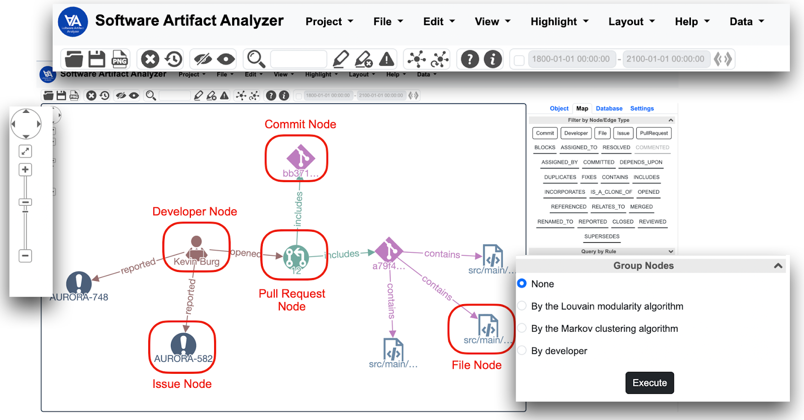

Software Artifact Analyzer
Software Artifact Analyzer (SAA) was built on a fork of the repository of the tool Visuall to visually analyze different software artifacts, including source code files, pull requests, issues, and commits, as well as their relationships with developers in the software projects.
Demo
A sample demo deployment can be found below: